AMaze团队
指导老师
| 指导老师（teacher） | |
 |
吴华 吴华（1981年生）博士现任华北电力大学控制与计算机工程学院副教授，硕士生导师，华北电力大学电力智能机器人工程技术研究中心主任。主要研究方向为：全自主巡检、机器人及无人机的同步定位与地图构建（SLAM）、影像识别、物流无人机的组合导航、多传感器融合、计算机视觉、机器学习、嵌入式计算等。AMaze团队是由吴华博士发起，并由一群喜爱智能机器人并愿意培养动手能力的优秀学生组成。通过对飞行机器人协同和环境感知等方向的实验和探索，不断提升团队成员的工程能力，鼓励形成各种有趣开源的创新作品。 |
| Wu Hua WU (born in 1981, China) is Associate Professor of the School of Control and Computer Engineering at North China Electric Power University, where he does research at the intersection of robotics, computer vision and machine learning. Specifically, he investigates the use of SLAM and machine learning to enable autonomous inspection with embedded on-board computation using vision, LIDAR and smart sensors for drones in inspection, monitoring and logistics scenarios. As a leader of AMaze ( a group of active, persistent and self-motivated students ), Dr. Hua WU would like to enhance the engineering ability of members and encourage more open-source innovations via experiments and research on cooperative flying robot, environmental perception. |
电子组
| 电子组（electronic team） | |
| 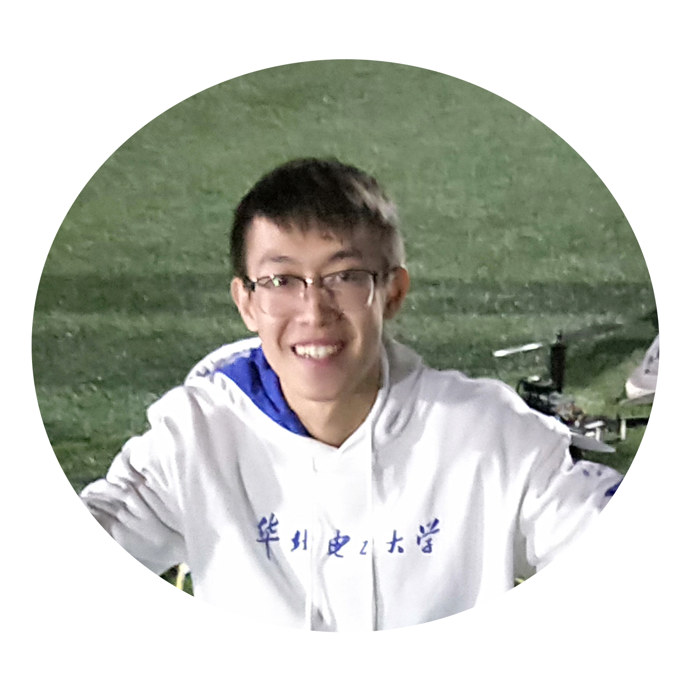 | 卜旭洋 就读于华北电力大学核科学与工程学院，现属于Amaze团队电子组一员，本人主要负责无人机的组装、调试和操控工作。个人动手能力较强，爱好亲自参与到科研活动当中，对C++、Matlab等软件有一定基础。 |
| Bu Xuyang Studying at the Nuclear Science and Engineering School of North China Electric Power University and now belong to the Amaze team electronics group. I am responsible for the assembly, debugging and control of unmanned aerial vehicles. Personal ability is strong, like to participate in scientific research activities in person, and has a certain foundation for C + +, Matlab and other software. |
|
| 王柏夫 大家好，我是华北电力大学数理学院的王柏夫，来自新疆昌吉。爱好是骑行，玩航模，听音乐。擅长动手操作，使用计算机。 |
|
| Wang Baifu Hello, I am wang baifu from the school of mathematics and science, from changji, xinjiang. Hobby is riding, playing model, listening to music. Be good at manual operation and use computer. |
|
| 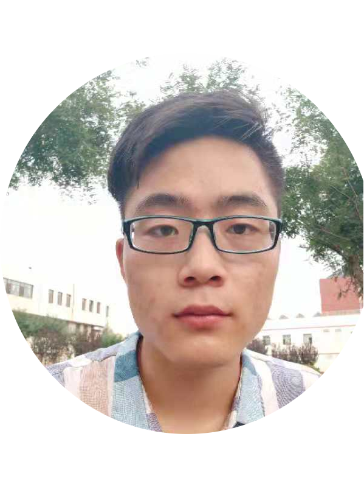 | 姚贵山 华北电力大学本科在读。自动化专业，在AMaze电子组，主要负责无人机的整体组装，维修及GPS校准与调试。 |
| Guishan Yao He is an undergraduate of North China Electric Power University, major in automation.In electronic part of AMaze team ,he is mainly responsible for UAV assemble, maintenance and GPS calibration and debugging. |
|
| 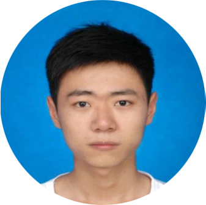 | 蔡玮 现在就读于华北电力大学，AMaze团队电子组成员。负责无人机硬件搭建与飞控代码研究，并进行一些调试工作 |
| Cai Wei Now studying at North China Electric Power University, a team member of the electronic team. Responsible for UAV hardware construction and flight control code research, and do some debugging work. |
|
| 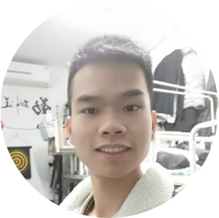 | 刘草 华北电力大学创新班学生，来自电子组，主要从事于飞控调试和试飞工作，强项是无人机遥控飞行。在实验室工作期间，我参加无人机搭建，硬件搭建，积累硬件调试经验，对调试工作很感兴趣。 |
| Liu Cao North China Electric Power University Innovation class students , from the flight control group, mainly engaged in flight control commissioning and test flight work .My strength is controling flight. During the work in the laboratory, I participated in the unmanned aerial vehicle erection, hardware construction, accumulated hardware debugging experience.I am interested inthe debugging work . |
|
| 谌文澜 华北电力大学自动化专业本科生，AMaze无人机团队电子组成员，参与无人机硬件搭建及调试，主要负责相关文档记录工作。 |
|
| Shen Wenlan undergraduate student from North China Electric Power University, member of AMaze Electronic team, participated in hardware constructing and debugging, mainly in charge of organizing and recording relevant documents. |
|
| 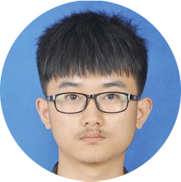 | 孙国栋 自动化专业，电子组的成员，学校飞行器协会会长，对飞行器非常感兴趣，对飞行器控制方面有一些基本了解，在组里学习飞行器控制，飞行监控，飞控代码等。 |
| Sun Guodong major in automation,a partner in electron team,president of the school aircraft association,is very interested in aircraft,has some ideas in aircraft control,is studying aircraft control flight character surveillance and Flight control code in group now. |
|
| 周帅宇 爱好改造与进步，喜欢交流与分享，崇尚合作与贡献。保持谦虚，保持好奇。 |
|
| Zhou Shuaiyu like to change and progress,love to communicate and share,want to corporate and devote.Stay hungry,stay foolish,always. |
|
| 朱政 做事认真有耐心，自信有上进心；带领团队参加美国大学生数学建模竞赛获S奖，参加全国大学生数学建模竞赛获北京市二等奖；熟练掌握c语言，有计算机二级C语言证书；熟练掌握office办公软件；热爱运动，参加2016体彩杯昌平区青少年户外挑战赛获亚军；热爱学习，一直不断在充实自己。 |
|
| ZhuZheng work conscientiously, self-confidence and self-motivated; Led the team to participate in MCM/ICM and won the Successful Participant, to participate in the China Undergraduate Mathematical Contest in Modeling and won the second prize in Beijing ; Proficiency in c language and office software; Love sports, and won the second place in the youth outdoor challenge competition of 2016 sports cup changping district.；I love learning, and I keep enriching myself. |
嵌入式组
| 嵌入式组（embedded computation team） | |
| 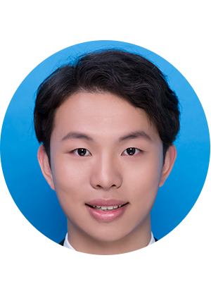 | 邓开 在AMaze团队中,担任嵌入式组组长，主要负责交叉编译，协助完成平台环境的搭建和嵌入式系统的制作等工作。今后希望更多与无人机和人工智能打交道。 |
| Deng Kai as the head of the embedded computation team in the AMaze team，is mainly responsible for cross compiling, assisting in the construction of the platform environment and the production of the embedded system. I hope to deal more with UAV and artificial intelligence in the future. |
|
| 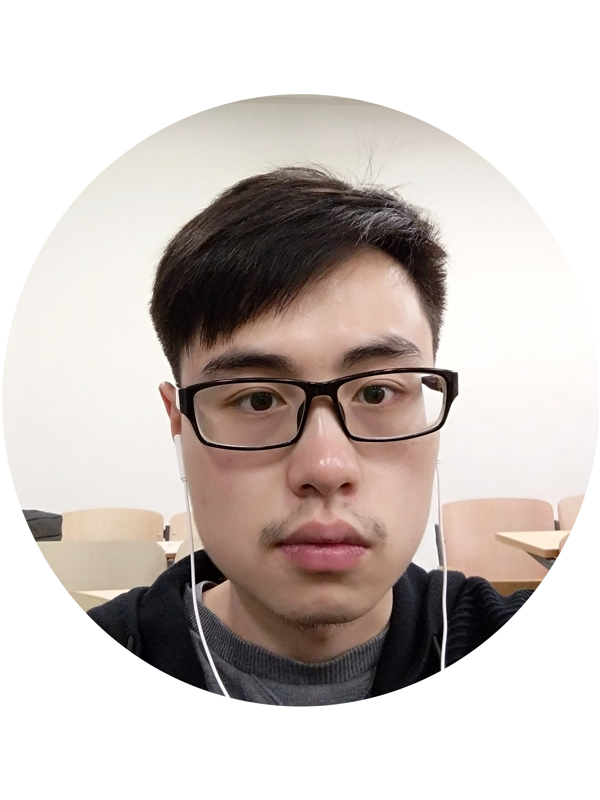 | 王晓伟 就读于华北电力大学自动化专业，现属于AMaze嵌入式组的一员。目前本人主要负责基于linux系统的嵌入式开发，主要针对系统镜像制作，烧写，系统环境配置，程序执行，网络配置等方面。个人具有一定的编程基础，掌握C,C++,python等高级语言，对无人机编队算法有浓厚的兴趣。对linux系统也有较深入的理解。致力于无人机导航，编队的环境配置与网络架构。 |
| Wang Xiao Wei An automation major from North China Electricity Power University and now the group leader of the AMaze embedded computation team.At present,I am responsible for Embedded Linux development mainly aiming at system image ,system enviroment configuration,program executionand network .Having certian programming foundation including C,C++,Python and great interst in UAV formation algorithm.Also having a deepunderstanding of Linux system.Devoting to enviroment configuration and network architecture of UAV navigation and formation. |
|
| 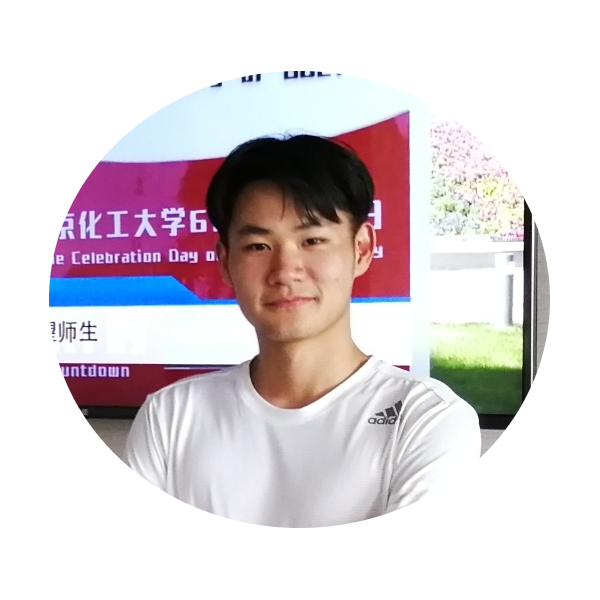 | 淳宇杰 就读于华北电力大学自动化专业，是Amaze团队嵌入式组的一员。目前主要负责树莓派的配置和应用。 |
| CHUN YUJIE Majoring the bachelor degree of Automation in NCEPU. Belonging to the team of Embedded computation. Now studying at the modification and application of the raspberry pi. |
|
| 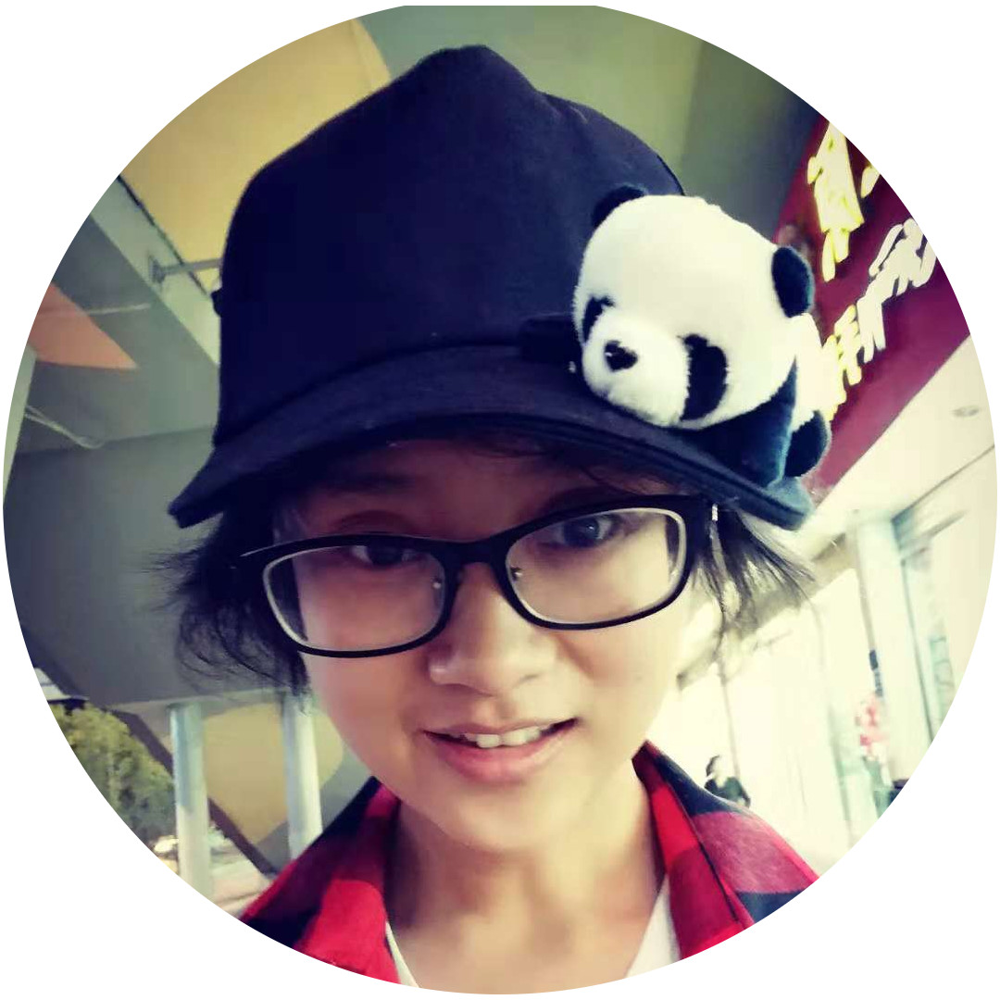 | 宋佳鑫 我是宋佳鑫，在学习中成长，在成长中学习，爱好听音乐、去旅行。从未尝试过窝在实验室里，第一次加入这样有趣的实验室开启一段无人机之旅，甚是期待。 |
| Song Jiaxin I'm Jiaxin Song , a girl who loves to listening music and traveling . ' To grow in learning , to learn in grow. ' is my motto. Without any experience in lab, joining the Amaze Group to learn UAVs really makes me excited. I hope it will be an interesting experience.' |
|
| 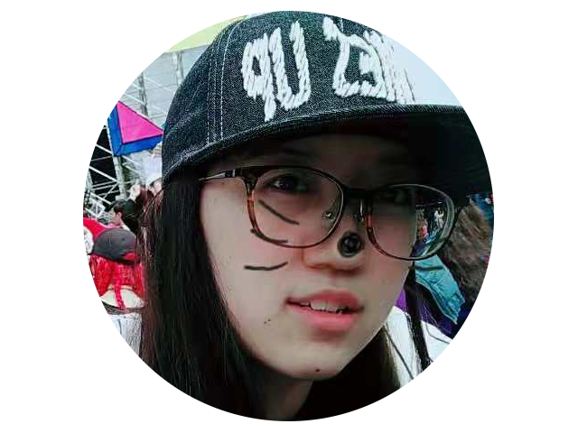 | 刘一卓 我是刘一卓，华北电力大学2016级自动化专业，来自山西。喜欢旅行，喜欢瑜伽，喜欢学习。“在所有‘从容不迫’的背后，都有你看不到的狼狈、慌张和焦虑。”是我最喜欢的一句话，希望自己努力成为一个优秀的人。 |
| Liu Yizhuo I am Liu Yizhuo from Shanxi at North China electric power university，majoring in automation in 2016.Like travel, like yoga, like learning.'Behind all the unhurried there is confusion, panic, anxiety that you can't see'is my favorite sentence. I hope myself to become an excellent person. |
|
| 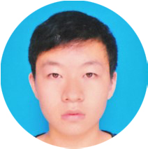 | 王亮 华北电力大学自动化系本科生，为实验室嵌入式小组的成员，主要负责硬件，以及嵌入式系统的制作与调试，希望以后能将其与人工智能，模式识别等方面结合起来。 |
| Wang Liang Department of Automation, North China Electric Power University, is a member of the lab’s embedded computation team, mainly responsible for hardware and embedded system production and debugging. And I hope to combine the embedded devices with artificial intelligence, pattern recognition and so on in the future. |
|
| 王恩东 华北电力大学自动化系本科生，为实验室嵌入式小组的成员，对计算机相关的东西有极强的兴趣，希望可以将兴趣转化为动力做下去。 |
|
| Wang Endong The undergraduate of Automation Department of North China Electric Power University is a member of the laboratory embedded team and has a strong interest in computer-related things. I hope that I can turn interest into motivation. |
|
| 王芳 是嵌入式小组的一员，主要从事交叉编译，嵌入式系统制作剪裁，平台环境搭建，文档整理等工作。我的爱好是跳舞和旅游。我喜欢跟着音乐，打着节拍，在舞蹈中绽放自我；我也喜欢成为一个背包客，穿过中国的每一个大街小巷，感受中国多元的文化。我为人热情真诚，谦虚努力，我想成为一个有爱，有能力的，散发着独特人格魅力的人。很荣幸加入这个实验室，能和老师同学一起交流学习，提升能力。这是一个大舞台，我会尽自己的力量，让这个舞台绽放更多的精彩。 |
|
| Wang Fang I’m a member of the embedded computation team, mainly engage in cross compilation, embedded system production tailoring, platform environment, document finishing and so on. My hobby is dancing and traveling. I like to follow the music, beat the Beat, in the dance to bloom myself; I also like to be a backpacker through every street in China to feel the Chinese multicultural culture. I am warm sincere, modest and diligent. I want to be a loving, capable, of a unique personality charm. I’m very honored to join this laboratory , exchange learning, improve ability with teachers and students . This is a big stage, I will do my best to let this stage bloom more wonderful. |
感知组
| 感知组（perception team） | |
| 张虎 张虎，华北电力大学控制与计算机工程学院自动化专业2016级本科生，2018年5月加入Amaze团队，现为感知组组长，主要参与设计无人机编队和无人机导航的控制程序，并负责编队项目。 |
|
| Zhang Hu My name is Zhang Hu. I am a 2016 undergraduate student in automation, School of Control and Computer Engineering, NCEPU. I joined Amaze in May, 2018. As a member of perception team, I mainly design the control programs for drone formation and robot navigation with other members. And I am the leader of the drone formation project. |
|
| 杨映军 就读于华北电力大学软件工程专业，现属于AMaze感知组的一员。目前主要负责的web相关和视觉部分，比如网页开发，代码整合和功能维护等。个人爱好编程，自学了前端与后端相关知识，能进行基础的应用，同时具有相关编程语言的必要基础，例如C++、Java、Python等，也掌握了基本的数据结构的知识，能运用一些常见的前端后端框架。 |
|
| Yang Yingjun Majoring in software engineering at North China Electric Power University, now belongs to AMaze perception team. Currently responsible for the camera and SLAM algorithm-related parts, such as code integration and functional maintenance.Personal hobby programming, self-learning front-end and back-end related knowledge, can carry out basic applications, and have the necessary foundations of related programming languages, such as C++, Java, Python, etc., also master the basic data structure knowledge, can use some common Front-end backend framework. |
|
| 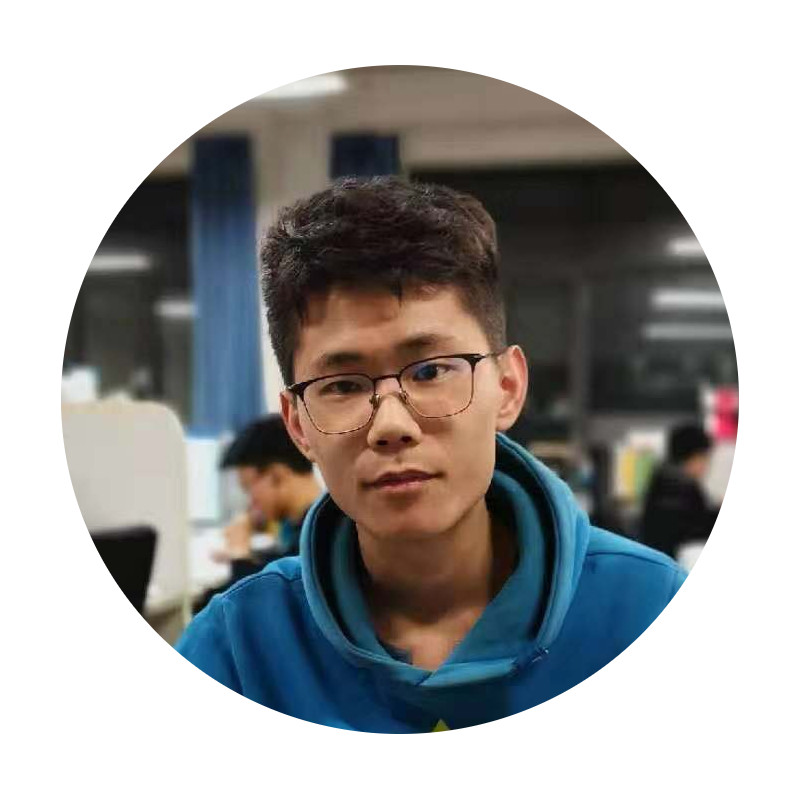 | 杨岱鑫 大家好我叫杨岱鑫，是一个开朗乐观的95后。喜欢交朋友，编写代码。对无人机有极大的兴趣，希望在团队中获得乐趣，发挥出自己的作用。 |
| Yang Daixin Hello everyone I am Yang daixin, is a openmind and optimistic boy who born after 95. Like making friends and typing code. I have great interest in drones and hope to have fun in the team and play my role. |
|
| 任琪 就读于华北电力大学软件工程专业，现属于AMaze感知组的一员。目前本人主要负责amazeweb的管理和维护。个人具有一定的编程基础，能够利用专业相关的知识对项目进行维护与管理。已经学习过C，C++，java，python等编程语言。本人能够熟练使用java进行项目开发，也掌握了程序开发所需的基本数据结构。 |
|
| Ren Qi studying software engineering at North China Electric Power University, now belongs to AMaze perception team. Currently I am mainly responsible for the management and maintenance of AMazeweb. Individuals have a certain programming foundation, able to use the relevant professional knowledge to maintain and manage the project. Have learned C, C + +, java, python and other programming languages. I can skillfully use java for project development, but also mastered the basic data structure required for program development. |
|
| 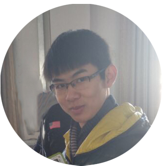 | 彭浚桓 就读于华北电力大学软件工程专业，现属于AMaze感知组的一员。目前主要负责的是摄像头与SLAM算法相关的部分，比如代码整合和功能维护等。个人擅长编码，有一定的设计意识，能够利用专业相关的知识对项目进行维护与管理。同时具有相关编程语言的必要基础，例如C++、Java、Python等，也掌握了基本的数据结构的知识。 |
| Peng Junhuan studying software engineering at North China Electric Power University, now belongs to AMaze perception team. Currently responsible for the camera and SLAM algorithm-related parts, such as code integration and functional maintenance. Personally good at coding, there is a certain sense of design, able to use professional knowledge to maintain and manage the project. At the same time have the necessary basis for the relevant programming language, such as C + +, Java, Python, etc., but also grasp the basic knowledge of the data structure. |